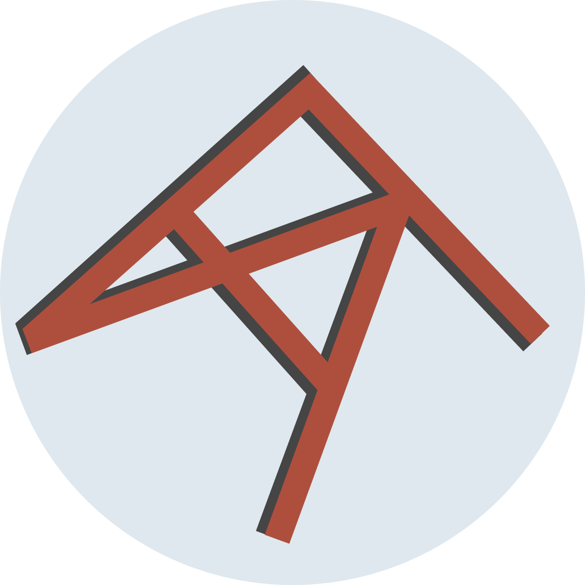

Create more, administrate less.
Alex Funk · ArtFunk
You can see over it. It's not impossible to climb.
It's just unfamiliar enough to feel like a barrier.
"A conversation with an AI that can
read, write, and run code for you."
If you can describe it, you can build it.
[Live demo]
What's the busywork you'd
rather not be doing?